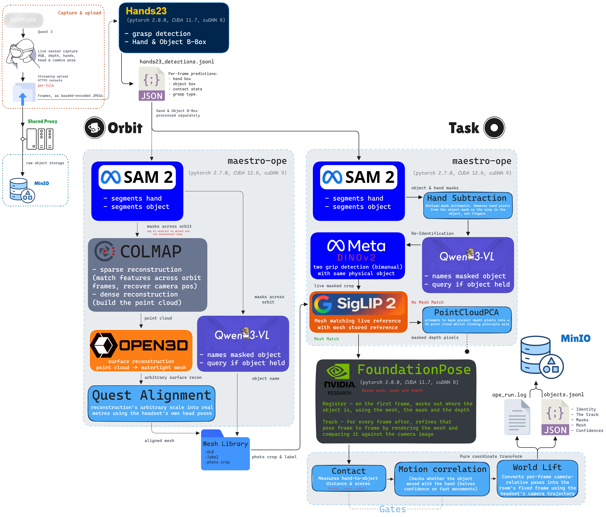

M.AI.ESTRO VR: system audit
System Demo
Full recording stitch
Clock orbit: capture and replay
Clock task: capture and replay
Pipeline Diagram
The pipeline PNG shows the flow from headset capture to stored object evidence, with separate task and orbit branches. Open the full-resolution image to inspect individual labels; the PDF gives the complete diagram its own landscape A3 page.


Pipeline Modules
Each node has a narrow responsibility. The audit question is whether the handoff between nodes is reliable enough for replay.
- 1
Quest capture
Records RGB, depth, headset pose and hand pose for task and orbit sessions.
Quest sensor capture - 2
Ingestion and MinIO
Accepts uploads, stores raw inputs and exposes session artifacts for worker processing.
MinIO object storage - 3
Hands23 hand detection
Provides hand/object contact evidence and candidate boxes before object processing begins.
Hands23 code and explanation - 4
SAM2 segmentation
Turns candidate evidence into masks for orbit reconstruction and task-frame object tracking.
SAM2 overview and code - 5a
PointCloudPCA
Provides model-free task pose estimates when a trusted mesh is not available.
Project pose measurements - 5b
FoundationPose with mesh
Runs when a suitable mesh, mask and depth are available; this is the stronger route for mesh-backed replay.
FoundationPose overview and code - 6
Qwen labels
Supplies an object label from the crop; useful, but still dependent on mask quality.
Qwen3-VL-4B-Instruct model - 7
DINOv2 and SigLIP
Support visual identity checks. The current audit keeps DINOv2 and SigLIP rather than adopting DINOv3.
DINOv2 ViT-S/14 model · SigLIP base model - 8
COLMAP mesh reconstruction
Reconstructs object meshes from orbit capture frames for canonical mesh-backed replay.
COLMAP tutorial and code - 9
Headset replay
Consumes stored objects, tracks, meshes and masks so captured objects can be inspected in VR.
Unity XR Interaction Toolkit
System Status
Open items are always visible. Fixes made before the 5 Oct audit are folded away. Open up to two cards at once.
Pre-audit fixes (before 5 October)
Hands23: the starting pointA detected grip supplies the hand and object boxes that seed the rest of the pipeline.Module 3Confirmed
Update, 12 Oct: The detector weights were lost in a server reboot, restored and moved to permanent storage, then checked against a reference run (identical results). See the audit below.
The live worker checks the separate Hands23 service and saves its detections before object processing. Missing detections now raise an error, instead of being mistaken for a recording with no object. A brief deliberate grip seeds the orbit route; task recordings use contact evidence to start tracking.
These boxes changed the architecture: SAM2 can now isolate both the hand and the object, so a separate SAM3 hand detector is no longer needed. A box is the starting region, not a finished mask or mesh.
SAM3 removal: SAM2 is sufficient for the current promptsHands23 supplies the boxes; SAM2 creates the object and hand masks.Modules 3, 4Confirmed
The earlier reference-image mesh route needed hand pixels removed before generating a mesh. SAM3 was also used for an object-presence check. It was removed after the Hands23-guided SAM2 route was evaluated; this was more than removing a duplicate model.
| Model | Plain-language role | Why this pipeline changed |
|---|---|---|
| SAM2 | Select a region using a point or box, then follow its pixels through video. | Hands23 supplies an object box and a hand box. SAM2 makes separate object and hand masks; hand pixels are subtracted. |
| SAM3 | Find and segment concepts using text or example prompts. | Previously used for hand removal and an object-presence check. Its hand mask failed on a real bottle recording; the presence score did not reliably distinguish a real grasp from a fake one. |
SAM2 runs with two different prompts, producing two masks. Qwen performs the remaining held-object check. This keeps the pipeline simpler without claiming SAM3 is inferior for every task.
DINOv3 encoder consolidationDecision made: keep DINOv2 and SigLIP. DINOv3 is not adopted.Module 7Confirmed
The aim is to simplify visual comparison and reduce model weight. DINOv3-S has 21.60M parameters and B 85.66M, versus 225.21M for the existing pair. The proposed replacement is not deployed.
| Method | Same object across hands, at 0.82 | Correct mesh decisions: historical 11 / all 15 |
|---|---|---|
| Current DINOv2 + SigLIP | DINOv2: 3/4 | SigLIP: 4/11 · 7/15 |
| DINOv3-S | 2/4 | 5/11 · 8/15 |
| DINOv3-B | 2/4 | 5/11 · 7/15 |
| DINOv3-B foreground comparison | Not measured as a separate re-ID method | 10/11 · 13/15; still two absent objects assigned incorrectly |
The earlier test compared reused/self crops rather than independent hand-to-hand views, and some source sessions were empty or had wrong masks. That proxy could not establish real re-identification. The corrected evaluation restored the data and used independent crops; it is complete and supersedes that first test.
Foreground matching ranks known objects better, but still wrongly assigns an absent pen and remote. Next research needs independent held-out recordings, absent-object checks and reliable rejection of unknown objects; any adopted replacement must also preserve the identity pipeline’s spatial/time checks. Keep DINOv2 and SigLIP, and leave mesh matching disabled meanwhile.
Orbit capture and 3D model generationAn orbit must follow one object through turns and flips, then build a complete 3D model, underside included.Modules 3, 4, 8, 9In progress
What works
- A deliberate first grip starts the orbit (hand selection is under Pre-audit fixes).
- Two 3D models, a candle and a clock, were built from orbits by hand in September, with real size from the headset's own movement.
Problems found
- Flipping the object mid-orbit. The tracker loses the object or makes duplicates. The bottle kept its object but added 4 duplicate candidates. In the candle and stopwatch orbits no object was found before the flip.
- The clock underside. Both trackers lose the clock when its underside faces the camera. Likely cause: the orbit and the model never covered the underside. Not yet proven.
- No 3D model is built after an orbit. Nothing starts it. 11 orbits from Batch 2B are waiting. The first test on a new orbit (wooden clock) failed because the mask covered only the dial.
- Frames without a mask make the model builder stop instead of skipping them.
- Headset replay. Facing the viewer at spawn is still open. The slanted start of the later clock model comes from the server-built model. Placement and size of new recordings, and grabbing with a distance pointer, are only partly done. FoundationPose replay on the headset is unverified.
Next
- Lock onto one object from the first grip, merge duplicates, and treat later turns and flips as the same object.
- A model builder that copes with a moving object, with a single-photo generator as a fallback marked "needs review".
- Build the model automatically after each orbit. Every model is checked by a person before it joins the library.
Still to investigate
- Whether flipped orbits can be rebuilt at all, or must be split into rigid parts.
- Why the underside is lost: the model, the tracker, or both.
Mesh matching and selectionA first matcher is on for three objects. New objects have no model, and replay still uses a temporary shortcut.Modules 7, 9In progress
Where it stands
- Each clip is compared with reference recordings. Settings are fixed and were not tuned. It is on for the ceramic clock, the scented candle and the rolling pin.
- More reference recordings cut wrong matches from 8 to 0 in a replay of 107 objects (counted by reading, not confirmed labels). That larger library is not live.
- None of the 43 Batch 2B clips matched, because those objects have no model.
- Replay shortcut: every task object is served the latest orbit model without an identity check.
Next
- Add approved models to the library with a record of where each came from.
- Match again against new models once they exist.
Still to investigate
- Look-alike objects that match by mistake. Real accuracy needs fresh recordings, not the clips used to design it.
No-mesh matching issueProposed: stop using the old point-cloud tracker as the automatic fallback for objects without a model. Use a manual trigger when needed.Module 5aWaiting confirmation
The issue
- Without a model, the old point-cloud tracker estimates the object from the visible depth points. When the visible patch changes the estimate jumps. Largest jumps measured: 0.15 m (slow candle), 1.05 m (fast clock), 0.74 m (cup on table).
- Steadier-pose versions (W2, W3) cut the shake but locked in wrong directions. Not adopted.
Proposed decision
- Drop this route as an automatic path. Run FoundationPose only on objects that have a model, and trigger the no-model case by hand when it is needed.
- Waiting for confirmation that supervisors and colleagues agree with this direction.
Still to investigate
- Whether W2 or W3 add anything on top of FoundationPose. Not tested.
FoundationPose trackingBeat the old tracker on four clock clips. In the live worker it runs beside the old tracker and does not replace it yet.Module 5bIn progress
Where it stands
- Our earlier description overstated how far it was used in the live pipeline. It now runs as a memory-capped service.
- In the live worker it runs in shadow mode: the old point-cloud pose is still the one saved. It skips orbit recordings.
- Same clips, same model, side by side: better on all four. No smoothing on either side. Both lose the clock when its underside faces the camera.
Next
- Decide when it becomes the main pose instead of a shadow, once the no-model decision is confirmed.
Still to investigate
- A confirmed replay on the headset. The earlier test showed only a wireframe.
Object namesNames come from a fixed keyword list. Anything outside it shows as "unidentified".Modules 2, 6In progress
Where it stands
- Rubik's cubes, the book, the controller, tape and the cereal box all show as unidentified. Qwen also mislabels some objects (the candle as "hand watch").
- Labels also feed the rule that merges an object seen by both hands, so a wrong label can split it.
Next
- Name objects from Qwen's own description of what is being handled, with safe names and a fallback.
Empty and split results10 clips came out empty and several objects were split in two.Modules 3, 4In progress
Where it stands
- Empty clips: 2 seed aborts, 4 quality-gate failures, 4 with no accepted grip. All 10 have hand-detector boxes on many frames.
- Splits: weak visual match, a same-hand-only merge rule and grip gaps just over half a second.
- Mask cleaning: using the current frame's hand box gave a small gain (switched on as a recorded exception). Restarting the mask did nothing.
Next
- Start the mask from the object box alone for clips that never started.
- One rule set that keeps the same object as one track, which also fixes the orbit duplicates.
Still to investigate
- How to start tracking small objects that are never found.
- Whether the size of the object changes how well the detector boxes it.
Shared GPU and the live workerOther jobs filled the GPU our worker used. Maestro now has its own GPU, and a lock keeps heavy jobs apart.Modules 2, 5b, 8In progress
Where it stands
- On 12 Oct other jobs filled GPU 2, so any new upload would have failed. All Maestro services now run on GPU 3, tested end to end.
- The old pose server is stopped. Services are named and labelled so anyone can see who holds the GPU.
Next
- A lock so clip processing, pose registration and 3D model building take turns. The first test failed on a setting and on a process-detection step. It is being changed so a lock fault can never fail a session, then retested.
Still to investigate
- The real peak memory of a processing session, which is still a guess.
Dedicated Maestro server endpointAwaiting IT approval. The request is submitted and there has been no response yet.Module 2Awaiting IT
Where it stands
- Maestro uses the shared university proxy. A dedicated endpoint is wanted for EEAI 2026 and the edge-AI presentation.
- After IT supplies it, headset URLs, HTTPS, uploads, metadata and mesh downloads must be tested together.
Estimated Timeline
...
Audit (12 October 2026)
Recordings
- Batch 2 was split into 2A and 2B. Uploads kept failing, so we built an upload queue first (first in, first out, with visible progress)
- 2B: 43 clips processed. None matched a 3D model, because no 3D models exist yet for the new objects. 10 came out empty and 4 split one object into two
Headset Recordings tab. "133.4 MB left" is one old failed clip being counted. A display fix is written and not yet installed

Old tracker vs FoundationPose
- FoundationPose tracks using the object's 3D model. The old tracker does not
- No smoothing on either side
Clock, live clip. The old tracker spikes. FoundationPose stays upright
Clock, hand task
Clock, back view
Clock plus a second object. Shows the one-object-becomes-two problem
- Problem: both trackers lose the clock when its underside faces the camera. Likely an orbit issue, which we are investigating
Flipping the object mid-orbit
- The tracker loses the object and makes duplicates
- Flipping sometimes does not work at all: the candle and the stopwatch were not found
- The bottle kept the object but added 4 duplicates
Bottle, flipped
Steadier pose (W2, W3)
- W2 = symmetry-aware continuity (keeps the box from jumping between look-alike orientations)
- W3 = W2 plus a speed limit on turning
- Done offline, alongside the FoundationPose work, on the old tracker's pose
- Result: much less shake, but it can lock in the wrong direction. On one clip it ended turned 90 degrees
- Not adopted for the old tracker
- Open: whether W2 or W3 help on top of FoundationPose. Not tested yet. FoundationPose's 3D model already fixes direction, so the gain may be small
Current, W2, W3 on the same clip. Shake gone, W2 ends wrong
Cleaning the masks
- The mask is the outline of the object, with the hand cut out of it
- Fix 1: cut the hand out using this frame's hand box. Small gain. Fewer broken outlines. Not enough to adopt
- Fix 2: restart the mask when it breaks. No effect
- Still a problem: many clips never find the object or start badly. That needs a better start, not cleaning
Fix 1 off (left) and on (right), best case. The old version loses the lower half of the bottle (blue = what the fix recovers). The typical gain is much smaller
Matching
- Each clip is compared with reference recordings. The settings were not tuned
- More reference recordings helped. Wrong matches in a replay of 107 objects: 8, then 2, then 0 (counted by reading, not confirmed labels)
- Matching only helps once an object has a 3D model. That is why none of the 2B clips matched